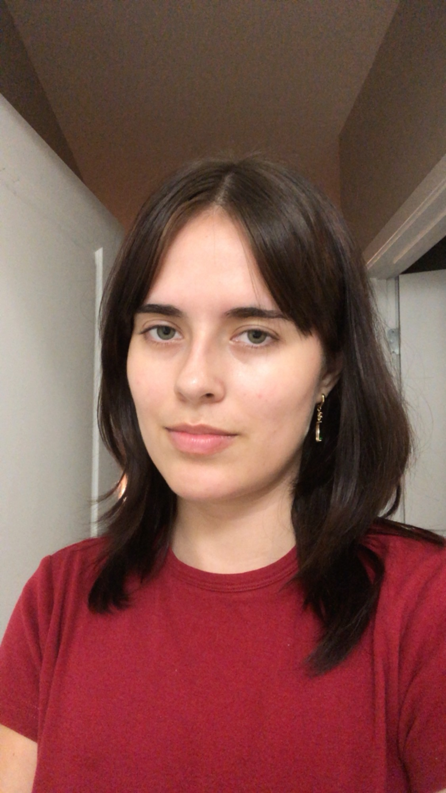

Welcome to Carmen-Mart!
Dear Visistor,
Hi! I am a third-year design student with a passion for illustration.
My inspirations include medieval art, nature and surrealim.
On this site you can buy prints, stickers and shirts that I have designed.
I hope you find something that you love!
Best,
Carmen Randolph Fajardo
